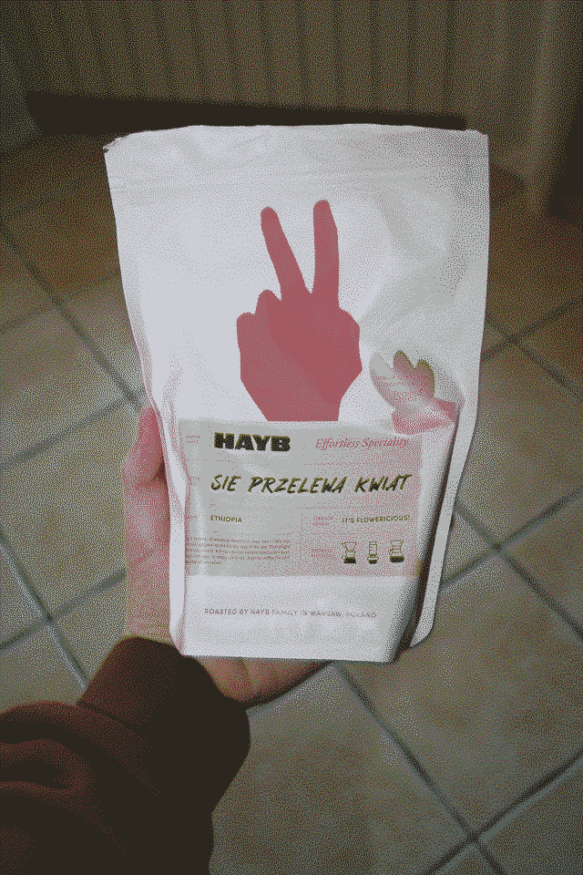

HAYB SIE PRZELEWA Kwiat

[zdjęcie zditherowane. kliknij by pobrać całość (2.82M)]
genialna. zdecydowany faworyt do wiosennego przelewu. w smaku nierzadko herbaciana. bardzo delikatna. przy parzeniu z większej ilości kawy zupełnie nie kwaśna, tylko lekuteńko gorzkawa. zdecydowanie godna polecenia.
przygotowywałem ją przelewowo.
ocena:
 (słownie: dziesięć ziarenek na dziesięć)
(słownie: dziesięć ziarenek na dziesięć)
(słownie: dziesięć ziarenek na dziesięć)
można kupić ją
tutaj